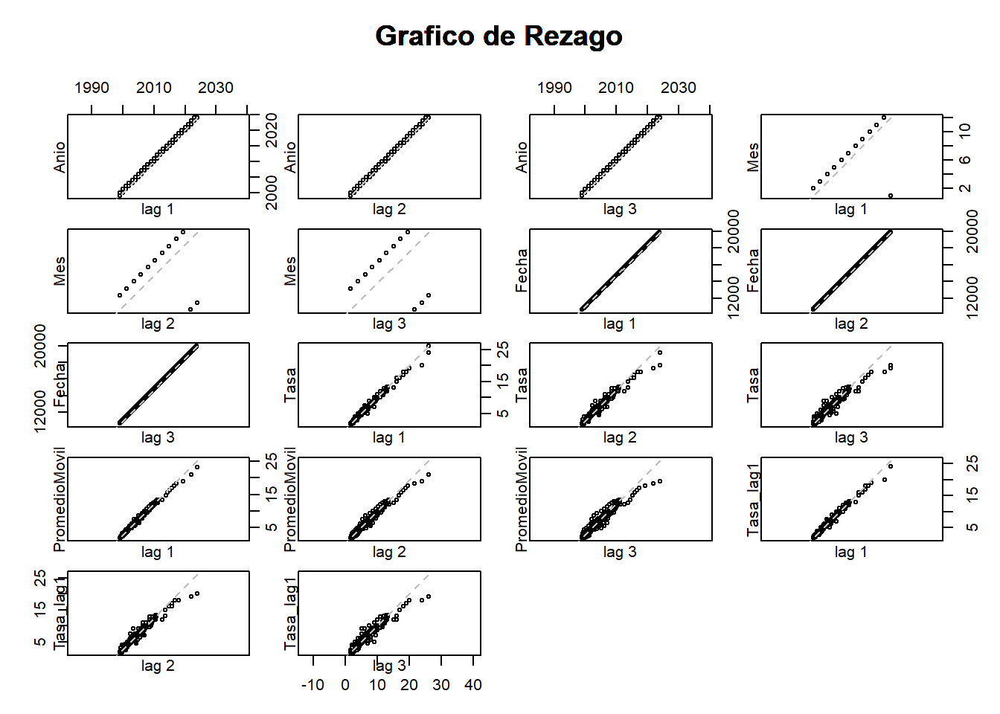

Analisis Tasa de Intervencion
2024-10-21
Capítulo: 1 Enunciado
En este momento deberemos retomar la Unidad 1 en la cual se creó un minilibro que contiene el entregable de dicha unidad. Este documento tiene como repositorio GitHub (elaborado desde Markdown). Ahora, en esta Unidad 2, se debe continuar con los datos presentados en dicho entregable y se debe evidenciar, en una de las variables en el tiempo, la aproximación en promedio móvil, en rezagos y en estacionalidad. Todo lo anterior, a través de funciones y gráficas que permitan detectar patrones y ciclos de la variable.
1.1 Análisis exploratorio
## tibble [310 × 2] (S3: tbl_df/tbl/data.frame)
## $ Fecha: POSIXct[1:310], format: "2024-10-01" "2024-09-01" ...
## $ Tasa : num [1:310] 10.2 10.8 10.8 11.8 11.8 ...Los datos representan una serie de tiempo de 310 filas y 2 columnas, correspondientes a la fecha y a la tasa. Se observa que la fecha realmente corresponde a un dato mensual por tanto conviene ajustar el formato.
## # A tibble: 2 × 2
## Fecha Tasa
## <dttm> <dbl>
## 1 2024-10-01 00:00:00 10.2
## 2 1999-01-01 00:00:00 26Al consultar el primer y último registro del dataset, se identifica que la observación más reciente corresponde al mes de octubre de 2024 con una tasa de 10.25%, mientras que el registro más antiguo es de enero de 1999, con una tasa de 26%. Estos datos indican que el dataset abarca un periodo de aproximadamente 25 años (310 meses), desde finales del siglo XX hasta la fecha actual, reflejando un amplio intervalo temporal que podría incluir distintas tendencias o cambios económicos en la variable Tasa.
## Fecha Tasa
## Min. :1999-01-01 00:00:00.00 Min. : 1.750
## 1st Qu.:2005-06-08 12:00:00.00 1st Qu.: 4.250
## Median :2011-11-16 00:00:00.00 Median : 6.000
## Mean :2011-11-16 00:18:34.83 Mean : 6.957
## 3rd Qu.:2018-04-23 12:00:00.00 3rd Qu.: 9.250
## Max. :2024-10-01 00:00:00.00 Max. :26.000- La serie cubre un rango de 25 años, con la mediana alrededor de 2011, lo que sugiere que los datos están relativamente bien distribuidos a lo largo del tiempo.
- La tasa tiene una amplia variabilidad, con un valor mínimo de 1.75 y un máximo de 26. La mayor parte de los valores se concentran entre 4.25 y 9.25 (entre el primer y tercer cuartil).
No se identifican datos ausentes:
## Fecha Tasa
## 0 0Con el código siguiente, se agregan dos columnas adicionales, llamadas Año y Mes, lo anterior para poder tener una mejor visual de los datos, teniendo en cuenta el gran número de registros que tiene el dataset.
## # A tibble: 6 × 4
## Anio Mes Fecha Tasa
## <dbl> <ord> <date> <dbl>
## 1 2024 oct 2024-10-01 10.2
## 2 2024 sept 2024-09-01 10.8
## 3 2024 ago 2024-08-01 10.8
## 4 2024 jul 2024-07-01 11.8
## 5 2024 jun 2024-06-01 11.8
## 6 2024 may 2024-05-01 12.21.2 Gráficos de visualización
## `geom_smooth()` using formula = 'y ~ x'
Puntos Azules: Los puntos azules indican los valores de “Tasa” en momentos específicos. Hay una dispersión considerable, sugiriendo que la tasa ha experimentado fluctuaciones a lo largo del tiempo.
Línea Roja: Esta línea es el resultado de un ajuste de suavización. La línea roja ilustra la tendencia general de la “Tasa” a lo largo del tiempo. A partir de la línea, se puede observar que, aunque hay variaciones, existe una tendencia que se puede analizar para hacer predicciones o entender mejor el comportamiento de la variable.
Variaciones: La gráfica muestra que la Tasa ha tenido picos y valles, lo que podría indicar variaciones estacionales o influencias externas que afectan la variable a lo largo del tiempo. A partir de la línea de suavización, parece que la Tasa ha ido disminuyendo o estabilizándose en ciertos períodos, teniendo una caída significativa desde 1999 hasta 2003, y un aumento importante de 2021 a 2024.
## `geom_smooth()` using formula = 'y ~ x'
Esta gráfica permite ver con más detalle los cambios de tendencia:
Desde 1999, se confirma la disminución significativa en la tasa, que empieza muy alta (cerca de 25) y cae rápidamente hasta estabilizarse alrededor de los años 2007-2008 en un valor muy inferior (por debajo de 10).
Entre 2005 y 2020, se observan picos y caídas a intervalos relativamente regulares, pero sin grandes cambios en los niveles generales hasta el repunte final.
Eentre 2010 y 2020, la tasa se mantiene más estable, con algunas oscilaciones en torno a los 5-10 puntos.
A partir de 2021, hay una tendencia de aumento, que se hace más pronunciada hacia los años más recientes. Esto podría ser consecuencia de algún cambio en las políticas o factores externos como la pandemia de COVID-19.
La línea de tendencia suavizada indica una caída rápida, seguida de un periodo de estabilización, y finalmente una tendencia de aumento en los años recientes, semejando una forma de “U” suavizada.
## `summarise()` has grouped output by 'Anio'. You can override using the
## `.groups` argument.| Anio | ene | feb | mar | abr | may | jun | jul | ago | sept | oct | nov | dic |
|---|---|---|---|---|---|---|---|---|---|---|---|---|
| 1999 | 26.0 | 26.0 | 24.0 | 20.0 | 19.0 | 18.0 | 18.0 | 17.0 | 16.0 | 16.0 | 15.0 | 13.0 |
| 2000 | 12.0 | 12.0 | 12.0 | 12.0 | 12.0 | 12.0 | 12.0 | 12.0 | 12.0 | 12.0 | 12.0 | 12.0 |
| 2001 | 12.0 | 12.0 | 12.0 | 11.5 | 11.5 | 11.5 | 11.5 | 11.0 | 10.0 | 9.5 | 9.2 | 8.8 |
| 2002 | 8.5 | 8.0 | 8.0 | 7.2 | 6.2 | 5.8 | 5.2 | 5.2 | 5.2 | 5.2 | 5.2 | 5.2 |
| 2003 | 5.2 | 6.2 | 6.2 | 6.2 | 7.2 | 7.2 | 7.2 | 7.2 | 7.2 | 7.2 | 7.2 | 7.2 |
| 2004 | 7.2 | 7.2 | 7.0 | 6.8 | 6.8 | 6.8 | 6.8 | 6.8 | 6.8 | 6.8 | 6.8 | 6.8 |
| 2005 | 6.5 | 6.5 | 6.5 | 6.5 | 6.5 | 6.5 | 6.5 | 6.5 | 6.5 | 6.0 | 6.0 | 6.0 |
| 2006 | 6.0 | 6.0 | 6.0 | 6.0 | 6.0 | 6.2 | 6.5 | 6.5 | 6.8 | 6.8 | 7.2 | 7.2 |
| 2007 | 7.5 | 7.8 | 8.0 | 8.2 | 8.2 | 8.8 | 9.0 | 9.2 | 9.2 | 9.2 | 9.2 | 9.5 |
| 2008 | 9.5 | 9.5 | 9.8 | 9.8 | 9.8 | 9.8 | 9.8 | 10.0 | 10.0 | 10.0 | 10.0 | 10.0 |
| 2009 | 9.5 | 9.5 | 9.0 | 7.0 | 7.0 | 5.0 | 4.5 | 4.5 | 4.5 | 4.0 | 4.0 | 3.5 |
| 2010 | 3.5 | 3.5 | 3.5 | 3.5 | 3.5 | 3.0 | 3.0 | 3.0 | 3.0 | 3.0 | 3.0 | 3.0 |
| 2011 | 3.0 | 3.0 | 3.2 | 3.5 | 3.5 | 4.0 | 4.2 | 4.5 | 4.5 | 4.5 | 4.5 | 4.8 |
| 2012 | 4.8 | 5.0 | 5.2 | 5.2 | 5.2 | 5.2 | 5.2 | 5.0 | 4.8 | 4.8 | 4.8 | 4.5 |
| 2013 | 4.2 | 4.0 | 3.8 | 3.2 | 3.2 | 3.2 | 3.2 | 3.2 | 3.2 | 3.2 | 3.2 | 3.2 |
| 2014 | 3.2 | 3.2 | 3.2 | 3.2 | 3.5 | 3.5 | 4.0 | 4.2 | 4.5 | 4.5 | 4.5 | 4.5 |
| 2015 | 4.5 | 4.5 | 4.5 | 4.5 | 4.5 | 4.5 | 4.5 | 4.5 | 4.5 | 4.8 | 4.8 | 5.5 |
| 2016 | 5.8 | 6.0 | 6.2 | 6.5 | 6.5 | 7.2 | 7.5 | 7.8 | 7.8 | 7.8 | 7.8 | 7.8 |
| 2017 | 7.5 | 7.5 | 7.2 | 7.0 | 7.0 | 6.2 | 6.2 | 5.5 | 5.2 | 5.2 | 5.0 | 4.8 |
| 2018 | 4.8 | 4.5 | 4.5 | 4.5 | 4.2 | 4.2 | 4.2 | 4.2 | 4.2 | 4.2 | 4.2 | 4.2 |
| 2019 | 4.2 | 4.2 | 4.2 | 4.2 | 4.2 | 4.2 | 4.2 | 4.2 | 4.2 | 4.2 | 4.2 | 4.2 |
| 2020 | 4.2 | 4.2 | 4.2 | 3.8 | 3.8 | 2.8 | 2.5 | 2.5 | 2.0 | 1.8 | 1.8 | 1.8 |
| 2021 | 1.8 | 1.8 | 1.8 | 1.8 | 1.8 | 1.8 | 1.8 | 1.8 | 1.8 | 2.0 | 2.0 | 2.5 |
| 2022 | 3.0 | 4.0 | 4.0 | 5.0 | 5.0 | 6.0 | 7.5 | 9.0 | 9.0 | 10.0 | 11.0 | 11.0 |
| 2023 | 12.0 | 12.8 | 12.8 | 13.0 | 13.0 | 13.2 | 13.2 | 13.2 | 13.2 | 13.2 | 13.2 | 13.2 |
| 2024 | 13.0 | 12.8 | 12.8 | 12.2 | 12.2 | 11.8 | 11.8 | 10.8 | 10.8 | 10.2 | NA | NA |
A partir de la tabla se pueden confirmar las tendencias mencionadas anteriormente, con un comportamiento descendente en los 12 primeros años (1999 a 2010), una estabilización en los 5 años siguientes (2011-2015) y un incremento significativo en años recientes (2021 en adelante).

El gráfico de dispersión temporal, presenta una tendencia decreciente al inicio (antes de 2005), seguida por un período de estabilización y una ligera recuperación hacia 2020. Después de 2020, la tasa muestra un aumento significativo. La caída inicial y el posterior aumento alrededor de 2020 son destacables.
1.4 Promedio o media móvil
Permite analizar el mercado a través de las tendencias. La media móvil es una técnica estadística que se utiliza para analizar datos a lo largo del tiempo. Permite calcular la media de un conjunto de valores en un intervalo específico y luego desplazar ese intervalo a lo largo de la serie de datos para obtener una nueva serie de medias; lo que permite suavizar fluctuaciones en los datos así como resaltar tendencias.
Se conoce como media móvil ya que el valor se calcula constantemente a medida que pasa el tiempo; de esta forma, la media cambia cada vez que los valores presentan alguna modificación.
## Warning: Removed 2 rows containing missing values or values outside the scale range
## (`geom_line()`).1.5 Rezago (operador backshift) y estacionalidad
El rezago es una herramienta estadística para el análisis de series temporales, que permite observar el valor de una variable en un momento anterior, facilitando la identificación de patrones y tendencias a lo largo del tiempo.
En cuanto a la estacionalidad, hace referencia a las variaciones periódicas y predecibles en los datos que ocurren en intervalos regulares.
Con la incorporación de ambas herramientas es posible modelar y prever comportamientos futuros de las series temporales.
## # A tibble: 6 × 6
## Anio Mes Fecha Tasa PromedioMovil Tasa_lag1
## <dbl> <ord> <date> <dbl> <dbl> <dbl>
## 1 2024 oct 2024-10-01 10.2 NA NA
## 2 2024 sept 2024-09-01 10.8 NA 10.2
## 3 2024 ago 2024-08-01 10.8 10.6 10.8
## 4 2024 jul 2024-07-01 11.8 11.1 10.8
## 5 2024 jun 2024-06-01 11.8 11.4 11.8
## 6 2024 may 2024-05-01 12.2 11.9 11.8
La gráfica visualiza la correlación entre una variable y sus valores rezagados (delayed values). Este gráfico es útil para detectar patrones en series temporales y evaluar la autocorrelación en los datos.
- Año vs Rezagos (lag 1, 2, 3)
Las gráficas entre Año y sus diferentes rezagos muestran una relación lineal perfecta, lo que era de esperarse, ya que el valor de un año en un rezago anterior está directamente relacionado con los años consecutivos. Esto sugiere que el “Año” no aporta una variabilidad significativa en términos de cambios bruscos, es decir, la serie avanza sin saltos.
- Mes vs Rezagos (lag 1, 2, 3)
Las gráficas entre “Mes” y sus rezagos muestran una estructura cíclica, con puntos que siguen un patrón predecible. Esto tiene sentido, ya que los meses siguen un ciclo repetitivo de 12 unidades (de enero a diciembre).
Los meses correlacionan bien con sus rezagos inmediatos, pero a medida que aumenta el número de rezagos (lag 2, lag 3), el ciclo es más visible, lo que indica que la periodicidad estacional en los datos está bien representada.
- Fecha vs Rezagos (lag 1, 2, 3)
Similar al año, la relación entre “Fecha” y sus rezagos también muestra una estructura lineal. Esto era previsible, ya que las fechas están organizadas de manera continua. No se observan cambios abruptos o interrupciones que puedan señalar eventos singulares en la serie temporal.
- Tasa vs Rezagos (lag 1, 2, 3)
En las gráficas entre “Tasa” y sus rezagos, especialmente en el rezago 1 (lag 1), se aprecia una clara correlación positiva, lo que significa que la tasa en un mes está fuertemente relacionada con la tasa del mes anterior. Esta relación indica una persistencia en la tasa, es decir, no hay cambios abruptos entre periodos consecutivos.
A medida que el rezago aumenta (lag 2 y lag 3), la relación sigue siendo positiva pero disminuye levemente, lo cual es normal: los valores más distantes en el tiempo tienen menos influencia directa entre sí, aunque todavía se observa cierta correlación.
Esto sugiere que la serie de tasas no presenta grandes fluctuaciones a corto plazo y que los valores siguen un comportamiento más estable, lo que puede indicar una tendencia suave sin variaciones abruptas.
- Promedio Movil vs Rezagos (lag 1, 2, 3)
Similar a la “Tasa”, las gráficas entre el “Promedio Móvil” y sus rezagos muestran una alta correlación, especialmente para lag 1. Esto sugiere que los promedios móviles no cambian drásticamente de un mes a otro, y los valores del promedio móvil están fuertemente ligados a los meses anteriores. A medida que aumenta el rezago (lag 2, lag 3), la correlación disminuye ligeramente, lo que indica que los valores anteriores siguen teniendo una influencia pero con una menor magnitud.
- Tasa Lag1 vs Rezagos
Las gráficas entre “Tasa_lag1” y sus rezagos también muestran una alta correlación. Esto es de esperar, ya que los valores rezagados de una variable tienden a mostrar correlación fuerte con rezagos cercanos.
Los gráficos de rezago muestran una clara autocorrelación tanto en las variables de “Tas”a” como en el “Promedio Móvil”, lo que sugiere que los valores actuales están muy influenciados por sus valores anteriores.
No se observan grandes fluctuaciones o cambios abruptos en la serie temporal, lo que implica que los datos de tasa y promedio móvil siguen una evolución suave a lo largo del tiempo.
La estructura cíclica en los meses sugiere que existe un patrón estacional predecible, lo cual es clave para definir modelos de predicción de series temporales con componentes estacionales, como modelos ARIMA/SARIMA o de descomposición estacional.
1.6 Descomposición
Con la función stl(), se descompone la serie en tendencia, estacionalidad y componente residual.

Con el gráfico correcto de descomposición, evidenciamos:
- Data (Serie Original):
Se observa que las tasas de interés han pasado por varios ciclos a lo largo del tiempo, con un periodo inicial en el que las tasas eran más bajas (cerca de los años 2000). A partir de 2020, las tasas muestran un claro incremento, lo que puede reflejar una política monetaria más restrictiva o la respuesta del Banco de la República a factores como la inflación o la estabilidad macroeconómica.
- Seasonal (Componente Estacional):
El componente estacional revela un ciclo repetitivo bastante regular a lo largo de los años, con un patrón de estacionalidad que parece repetirse anualmente. La estacionalidad es un componente importante y muestra que ciertos meses o épocas del año presentan picos o caídas en la tasa de interés, posiblemente asociados con dinámicas de liquidez o factores económicos específicos (como ciclos agrícolas, comerciales o el impacto de eventos globales cíclicos). Los picos más acentuados y las caídas rápidas indican que la estacionalidad tiene un impacto considerable, con cambios regulares de corto plazo que el Banco de la República puede usar para ajustar la política.
- Trend (Componente de Tendencia):
La tendencia de largo plazo muestra un ciclo de aumento hacia finales de los años 2000, seguido de una disminución suave en los años posteriores. Sin embargo, desde alrededor de 2020, se observa un repunte claro de las tasas. Este aumento de las tasas a partir de 2020 puede estar relacionado con factores económicos recientes, como la pandemia de COVID-19, el aumento de la inflación global y las medidas que los bancos centrales, como el BanRep, tomaron para frenar la inflación y ajustar la política monetaria. El gráfico sugiere que la tasa de intervención ha seguido un patrón cíclico a largo plazo, con fases alternas de crecimiento y caída.
- Remainder (Componente Residual):
El componente residual muestra las fluctuaciones que no pueden explicarse ni por la tendencia ni por la estacionalidad. Estas variaciones podrían deberse a eventos inesperados o choques externos que han afectado la política monetaria del país. Se observan varios picos de volatilidad, como por ejemplo, alrededor del 2002, 2008-2009 (coincidiendo con la crisis financiera global), y más recientemente en torno a 2020, que podría estar relacionado con los efectos económicos de la pandemia.
La volatilidad hacia el final del gráfico es más alta, lo que podría indicar periodos de mayor incertidumbre económica o choques en los últimos años.
Tendencia de tasas crecientes: El reciente aumento de las tasas de interés refleja probablemente un intento del Banco de la República de controlar la inflación y mantener la estabilidad macroeconómica en medio de un entorno de incertidumbre global.
Estacionalidad significativa: El componente estacional muestra que la política monetaria sigue patrones regulares, lo cual puede estar vinculado con las necesidades cíclicas de liquidez en el mercado. Estos ciclos estacionales parecen estar bien definidos, lo que permite un ajuste más predecible de las tasas en el corto plazo.
Impacto de choques económicos: El componente residual sugiere que eventos económicos inesperados han afectado la política monetaria, especialmente en periodos de crisis como 2008 y 2020. Estos choques pueden generar fluctuaciones a corto plazo que no son fácilmente predecibles.
1.7 Estacionariedad
La prueba ADF indica si la serie tiene una raíz unitaria (es decir, si no es estacionaria).
##
## Augmented Dickey-Fuller Test
##
## data: ts_data
## Dickey-Fuller = -1.15, Lag order = 6, p-value = 0.9133
## alternative hypothesis: stationaryEl resultado del test muestra un valor de -1.15, con un p-valor de 0.9133. Dado que el p-valor es alto (mayor que un nivel de significancia común), sugiere que la serie temporal NO es estacionaria, por lo que podría requerir transformaciones adicionales, como la diferenciación, para hacerla estacionaria antes de modelarla.
1.8 Diferenciación
Si una serie no es estacionaria, la diferenciación la ayuda a volverse estacionaria.

Al diferenciar la serie de tiempo, se observa en el gráfico una serie fluctuante en torno a cero. Esto es una señal de que la diferenciación ayudó a eliminar la tendencia de la serie original, haciendo que los valores oscilen alrededor de un valor medio estable, lo que suele indicar un proceso estacionario.
1.9 Volver a verificar la Estacionariedad tras la Diferenciación
Realizar nuevamente el test de Dickey-Fuller sobre la serie diferenciada permite confirmar la estacionariedad alcanzada:
##
## Augmented Dickey-Fuller Test
##
## data: differenced_data
## Dickey-Fuller = -3.0792, Lag order = 6, p-value = 0.1214
## alternative hypothesis: stationaryEl resultado del test de Dickey-Fuller aplicado a la serie diferenciada muestra un valor de estadístico de -3.0792 y un valor p de 0.1214. Aunque el estadístico es más bajo que en la serie inicial, el valor p sigue siendo mayor a 0.05, lo que significa que la serie diferenciada podría no ser completamente estacionaria, y podría sea necesario un segundo nivel de diferenciación o explorar otras transformaciones.
1.10 Autocorrelación (ACF) y Parcial (PACF)

ACF: Las barras decrecientes sugieren una estructura de autocorrelación significativa, especialmente en los primeros rezagos, lo cual es típico en series con dependencia a corto plazo.
PACF: muestra una caída rápida después del primer rezago, lo cual sugiere que un modelo ARIMA de bajo orden podría ser adecuado para capturar la dinámica de la serie diferenciada.
Data: Se observa que a lo largo de la serie, existen varios picos, y la variabilidad parece aumentar en ciertos puntos. Esto indica que hay períodos con comportamiento anómalo o ruido.
Seasonal (Estacional): La componente estacional muestra una clara periodicidad, con patrones que se repiten consistentemente en intervalos regulares. Esto indica que la serie tiene un comportamiento cíclico fuerte. Este componente estacional es útil para capturar patrones que se repiten cada cierto tiempo.
Trend (Tendencia): La tendencia parece ser suave y muestra algunos cambios a lo largo del tiempo. Aunque la serie fue diferenciada, la tendencia residual indica que aún existen fluctuaciones de largo plazo, como un ligero aumento hacia el final de la serie. Esto sugiere que, aunque se haya eliminado una parte de la tendencia inicial mediante la diferenciación, todavía hay un componente de tendencia en los datos.
Remainder (Residuo): Este componente representa la variabilidad no explicada por la estacionalidad ni la tendencia. Se observan varios picos y una dispersión más amplia en ciertos puntos de la serie. Esto sugiere que puede haber variaciones aleatorias o anomalías en ciertos periodos, especialmente al final, donde los residuos son más grandes. La presencia de valores residuales grandes refuerza la idea de que hay eventos impredecibles o ruido en la serie.
En resumen, la serie de tiempo diferenciada aún conserva una componente estacional significativa, y la tendencia residual es pequeña pero sigue presente. Los residuos presentan variaciones irregulares, especialmente al final, lo cual podría indicar la necesidad de modelar con más precisión estos picos o variabilidad.